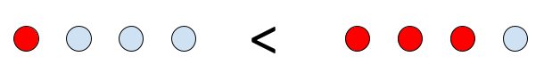
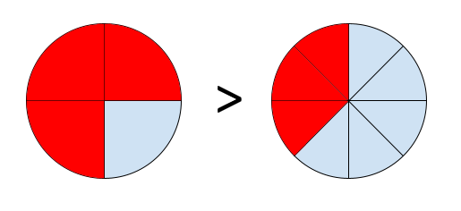

What You Should Know - Snap Circuits Rover: Night Rover
 Important Vocabulary
Important Vocabulary
- Shape - a geometric figure that has closed sides
- Equal - the same
- Part - a piece of something
- Area - the surface of a thing
- Unit Fraction - a fraction with a numerator of 1
- Numerator - the top number of a fraction, which describes the number of parts of a whole
Rovers
A rover is a machine designed to move across the solid surface of a planet. Some rovers have been designed to land on other planets and carry gear or transport members of a human space flight crew. Some rovers have been built to drive completely on their own with remote control; they collect data, images, and rock samples for scientists to study. The first Mars Rover sent by NASA was named Sojourner and it landed on Mars in 1997. The most recent Mars Rover is Perseverance, and it landed in 2020. NASA had four goals for their Mars exploration:
- Find out if there was ever life on Mars.
- Understand Mars' climate. What is the climate like today? What was it like in the past? Why did it change?
- Understand Mars’ geology. Why is Mars so rocky? How did the planet form?
- Get ready for humans to travel to Mars.

How can a rover help with NASA's goals? What types of tools or features would have to be added to a rover to help it complete all its tasks?
Circuits
Electricity flows from a power source (like a battery) along a path (a wire or another conductive material) to a load (an electrical device like a light) and then back in a loop.
All circuits have these three parts:
- a power source (battery)
- load or resistor (light, motor, fan)
- conductor (wire path)

A load is also called a resistor because it creates resistance between the two ends of the power supply. The resistor needs electricity to work, and as it does, it reduces the current flow. In this example, the resistor is a light. As the bulb uses some of the electricity to light up, it reduces the current.
A path does not have to be made of wires; it just needs to be made of a conductive material, so that there is a path between the power source and the resistor. Some circuits use metal strips, and some use magnets. The Snap Circuits Rover uses color-coded wires with snaps on each end to hold them in place. Each wire is made out of copper wrapped in colored plastic. Copper wire is conductive, and plastic is not. What other conductive materials can you think of?
Unit Fractions
When you have an object that is divided into equal parts, each part can be represented by a unit fraction. A unit fraction is a fraction that has a numerator of 1. The numerator is the top number in a fraction. The fractions ½, ⅓, and ¼ are examples of unit fractions. This pizza is partitioned into 8 slices or parts. If we were to take one slice, we would have ⅛ of the pizza.
Equality and Inequality Symbols
Equality and inequality symbols are used to compare two or more numbers.
|
Symbol |
Description |
|---|---|
|
< |
Less than |
|
> |
Greater than |
|
= |
Equal to |
When comparing two numbers you should read from left to right.
For example:
¼ < ¾
One fourth is less than three fourths. We know this because when the denominators are the same, we compare numerators; in this case one is less than three.
¾ > ⅜
Three fourths is greater than three eighths. We know this because when the numerators are the same, we compare denominators; the larger fraction has the smaller denominator. (This will be more obvious when you look at the visual fraction model in the section below.)
Notice that the symbol always opens up to whichever value is the largest. You should also note that in order to compare fractions, either the numerators or the denominators must be the same.
Visual Fraction Models
Visual fraction models can help us see the fraction comparison examples mentioned above. To create a model to represent fraction comparisons, simply draw sets of identical shapes as seen below. Each set should have the same number of shapes. Shade in the shapes that represent each fraction, then compare the sets to see which has more shaded shapes.
In the visual fraction model, four circles are equal to a whole. One circle colored in red is like shading in one fourth of the whole. Three circles colored in red is like shading in three fourths of the whole. Which side has more shaded circles? Which side represents a greater (or larger) number?

Another way to illustrate a visual fraction model would be to draw identical shapes and section them off into equal parts. Then, shade the parts that represent the fractions. In this way, we can see which shape has more shaded parts.
Below is an example of this type of visual fraction model. We see circles divided into equal parts, with one circle representing a whole. The first shows circles divided into halves. The second shows a circle divided into fourths. Both have three shaded parts. Which has more area shaded, making it the larger fraction?
 3/8" title="visual fraction model for 3/4 > 3/8" data-d2l-editor-default-img-style="true" style="max-width: 100%; display: block; margin-left: auto; margin-right: auto;">
Even though both groups have three shaded parts, the parts of the circle on the left are larger. Each part, or unit fraction, is one fourth of a circle, ¼. The circle on the right is divided into eighths, so each part, or unit fraction, is only one eighth, ⅛.
Career Connection and Real-World Application
Robotic Engineer
Robotic engineers, like those that work on the Mars Rover, have many responsibilities. They give commands and instructions to the rover so it can safely perform its tasks and collect samples. They monitor the rover to make sure that it is able to stay healthy and operate properly. They even plan the rover’s driving routes by putting on 3-D glasses to study the ground and find the safest paths.
Fractions in Careers
Many jobs require the ability to separate things into equal parts. These parts, called unit fractions, are used to make sure things are separated equally.
People such as farmers working in agricultural careers use unit fractions as part of their jobs. Farmers need to be able to divide their plots of land up into equal sections. This allows a variety of crops to be planted.
Architects also use equal parts in their blueprints. Blueprints are a design plan of a building or space. They need to be able to section off the building to create different rooms.